A phantom of a memory, Omen hunts in the shadows. He renders enemies blind, teleports across the field,
then lets paranoia take hold as his foe scrambles to learn where he might strike next.
INSTANTLY fire a shadow projectile forward, briefly reducing the vision range of all players it touches. This projectile can pass straight through walls.
PARANOIA
EQUIP a shadow orb, entering a phased world to place and target the orbs. PRESS the ability key to throw the shadow orb to the marked location, creating a long-lasting shadow sphere that blocks vision.
DARK COVER

EQUIP a shadow walk ability and see its range indicator. FIRE to begin a brief channel, then teleport to the marked location
SHROUDED STEP

EQUIP a tactical map. FIRE to begin teleporting to the selected location. While teleporting, Omen will appear as a Shade that can be destroyed by an enemy to cancel his teleport.